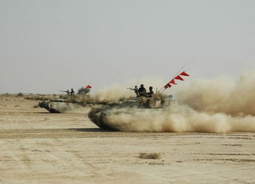
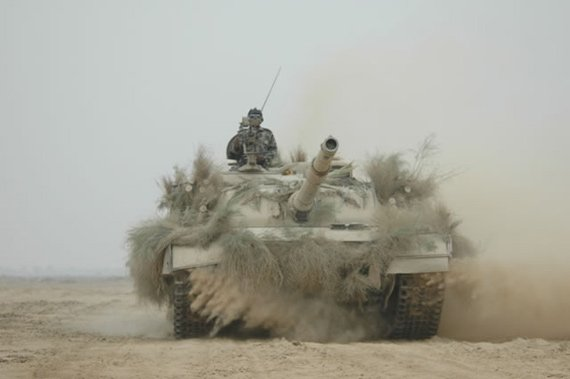

Journey of Armoured Corps centre from Ahmednagar to Nowshera commenced with the announcement of independence of Pakistan as made by Quaid-i-Azam Mohammad Ali Jinnah. On the same day, the Pakistan Armoured Corps was born. At that time, there was no Armoured Corps training institution in any area. All such training institutions were located at four different places in India. These were:-
Under the Independence Act, it was decided that the Indian Army, including the Armoured Corps, will be divided at the ratio of 2:1 between India and Pakistan. The Armoured Corps School at Ahmednagar had to stay with India, and the Muslim instructors were allowed to opt for the newly born state of Pakistan. In addition, the training equipment at the school was also to be distributed as per the decided ratio. To carry out this colossal task of distribution, a board composed of British, Muslim, Sikh and Hindu officers was constituted under the chairmanship of Brigadier Gimson, who was the Commandant of the Armour School at that time. On similar lines, other boards were constituted, for all other training centres.
After the arrival of Mountbatten, as Viceroy of India, the partition date was announced. Time was precariously short. The C-in-C, Field Marshall Sir Claude Auchinleck and his staff produced the plan for the division of the Army. The division of the Indian Armoured Corps was based upon the principle that regiments with ethnic majorities would be allotted to their respective ethnicities. Pakistan's share was 6 regiments, (5 H, 6 L, 11 C, 13 L, 19 Land Scinde Horse). Since Guides had one Dogra and one Sikh squadron, it was allotted to India. Scinde Horse with one KK (Khaim Khani) and one Pathan squadron was earmarked for Pakistan. Because of the Guide's association of over 90 years with Mardan, the CO requested for it to be allocated to Pakistan. The C- in- C refused, however, a miraculous freak changed our fate. The KK squadron of Scinde Horse decided to remain in India as their homes in Rajputana were now part of India. This happy decision of the KK squadron brought the Guides to Pakistan. It received the Pathan squadron from Scinde Horse and the PM squadron from Hodson's Horse, giving its Sikh squadron to Hodson's Horse and its Dogra squadron to Scinde Horse.
On Partition, the Indian Army retained what was the Centre and School of the Indian Armoured Corps along with a majority of the officer cadre, most of whom were non-Muslims, in accordance with the British policy. Consequently, with very few officers in Armoured Corps, all below the rank of lieutenant colonel, and with the GHQ placing emphasis mostly on the Corps of Infantry, the organization of the Armoured Corps was adversely affected in the initial period preceding Partition. The overall situation was so pathetic that there was no existence of even a Directorate for the Armoured Corps, which is so vital for regulating the affairs and solving the evolutionary problems of the Corps, there being just a Grade-2 staff officer who was a British officer named Major Ritter.
After taking over some share of stores, equipment and funds,assets were moved to Pakistan. Nowshera was selected for the Armoured Corps Centre and School. The advance party arrived at Nowshera in November 1947 and the main body followed a month later. The Sikh Regimental Training Centre and British Military Hospital lines were taken over. Considerable difficulties were experienced both in India and on arrival here, but due to the sheer hard work, initiative and dedication displayed by the officers, junior commissioned officers and soldiers, all difficulties were overcome and the Armoured Corps Centre and School was established at Nowshera Cantonment. In April 1948, Quaid-e-Azam Mohammad Ali Jinnah visited this establishment and addressed a Durbar which is an honour for the Armoured Corps. In April 1948, the first attestation parade was held for the first batch of recruits to pass out and since then a steady flow has been maintained.
Sowar Muhamad Hussain Shaheed (NISHAN-E-HAIDER) Boys Hostel was established in October 1992 to give free education to male children of Shaheed, deceased, war wounded and retired / serving Junior Commissioned Officers / Soldiers of the Armoured Corps on merit. Initially the numbers of students were 40, which was subsequently to 82. Students from class 6th to Intermediate are eligible for admission in the Hostel. All expenses on account of boarding, lodging, medical treatment, books, stationary, school and extra coaching fee etcetera are borne by the Armoured Corps Centre.